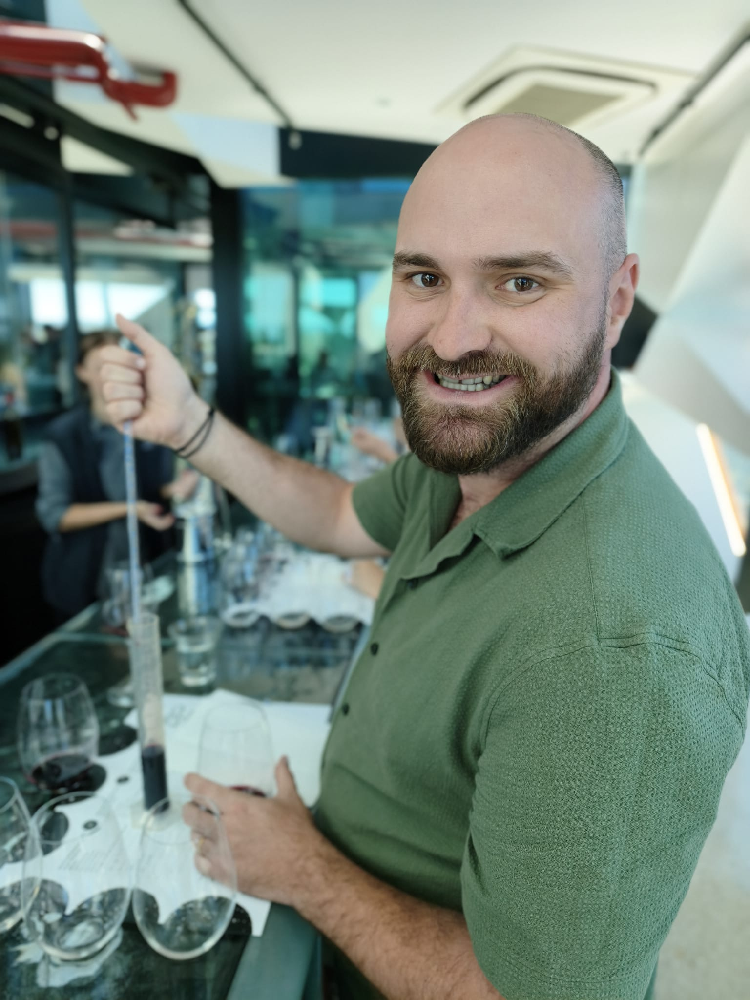
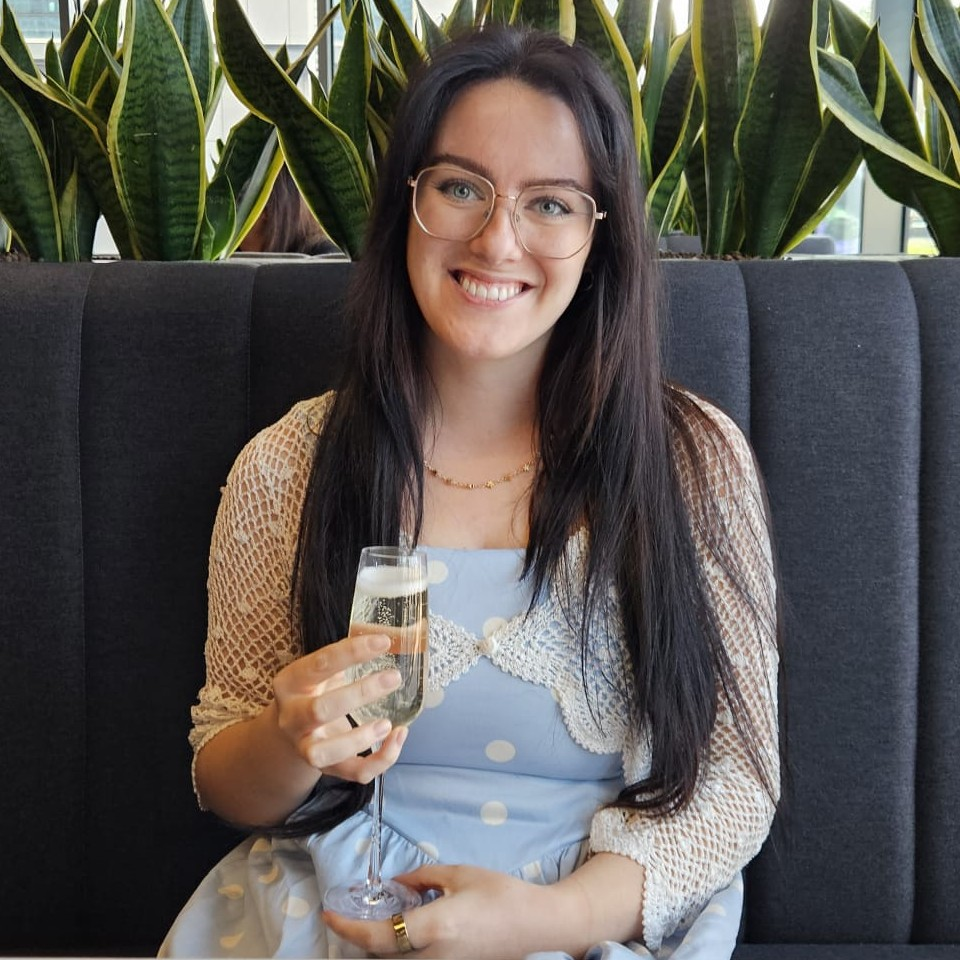

Lab members
A small group working across computational protein design, structural biology, and host-pathogen interactions — spanning plant immunity and neglected tropical disease.

Adam Bentham
Principal InvestigatorAssistant Professor, Department of Biosciences · Co-Director, Centre for Programmable Biological Matter. Previously a postdoc at the John Innes Centre and The Sainsbury Laboratory.
Durham staff profile →Photo placeholder
Gregory Knight
PhD Student Synthetic signalling Surface frustration
Dr. Lucy Butler
Visiting Postdoctoral Scientist Viral diagnostics Anti-virulence designPhoto placeholder
Zorian Tytych
MRes Synthetic immune receptorsPhoto placeholder
Louis Livingstone
MRes Neglected tropical diseasePhoto placeholder
Huw Edwards
Undergraduate Intern Plant pathogen bindersPhoto placeholder
Jana Reynolds-Benaiges
Undergraduate Intern Plant pathogen bindersWorking with
The lab collaborates closely with Jonathan Heddle and Ting-Yu Lin (Centre for Programmable Biological Matter, Durham University), Elaine Fitches (Biosciences, Durham University), Mark Banfield (John Innes Centre) and Nick Talbot (The Sainsbury Laboratory), alongside a wider network across the UK and EU.